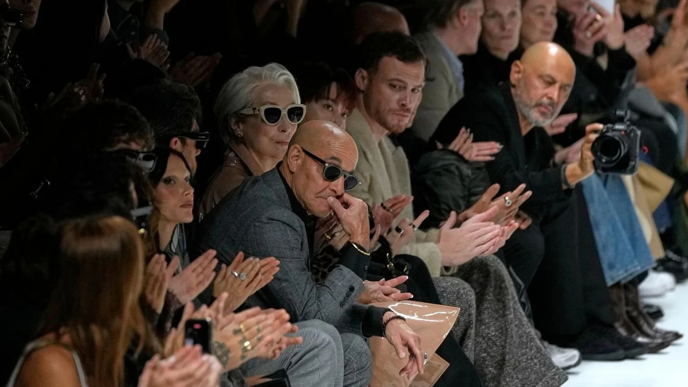

Desarrollo
En 2013, Lauren Weisberger escribió una secuela, La venganza viste de Prada: El regreso del diablo. No parecía probable que se hiciera una secuela de la película original, ya que dos de sus protagonistas no estaban muy entusiasmadas. Meryl Streep, según se informa, declaró que no estaba interesada en hacer una secuela, y aunque Anne Hathaway afirmó que le interesaría trabajar con las mismas personas, tendría que ser "algo totalmente diferente".
En julio de 2024, se informó que Walt Disney Studios, la división matriz de 20th Century Studios, estaba interesado en desarrollar una secuela. Para julio, comenzaron las negociaciones con Aline Brosh McKenna regresando para escribir el guion, y Streep, Hathaway, Emily Blunt y Stanley Tucci repitiendo sus papeles de la primera película.
Rodaje
La fotografía principal comenzó el 30 de junio de 2025, con David Frankel dirigiendo nuevamente y Kenneth Branagh uniéndose al elenco. En julio, se anunció que Tracie Thoms y Tibor Feldman repetirían sus papeles, con Simone Ashley, Lucy Liu, Justin Theroux, BJ Novak, Pauline Chalamet, Rachel Bloom y Patrick Brammall como nuevas incorporaciones al elenco. Streep, Hathaway y Tucci fueron vistos filmando en la ciudad de Nueva York en la semana del 21 de julio. Blunt fue visto por primera vez una semana después. Brammel y Hathaway fueron vistos filmando una escena juntos el 5 de agosto. Sydney Sweeney fue vista en el set con Blunt el 7 de agosto.
Tucci y Streep filmaron escenas durante el desfile de Dolce & Gabbana en la Semana de la Moda de Milán el 27 de septiembre. Posteriormente, el rodaje se trasladó a Milán, Italia, del 6 al 18 de octubre. Durante ese mismo mes, se avistó a Donatella Versace en el set para la filmación de un cameo, mientras que se anunció la participación de Lady Gaga con un papel en la cinta.

Musica
El tráiler de The Devil Wears Prada 2 incluyó un adelanto de «Runway» (2026), una canción original interpretada por Lady Gaga y Doechii. El tema, que comparte su título con la revista ficticia dirigida por Miranda Priestly, presentó un estilo house pop y acompañó musicalmente el avance. La canción se lanzó el 9 de abril de 2026.
Estreno
The Devil Wears Prada 2 (el diablo viste a la moda 2 en latinoamerica) tiene programado su estreno en los Estados Unidos para el 1 de mayo de 2026. Su estreno mundial se llevará a cabo en el Lincoln Center en la ciudad de Nueva York el 20 de abril, y el estreno se transmitirá en vivo en Disney+ y TikTok. Para el año 2025, el primer avance de la cinta se convirtió en el tráiler de comedia más visto en 15 años, alcanzando los 181.5 millones de visualizaciones en sus primeras 24 horas. La corrección de color y la iluminación de la película, tal como se presentan en el tráiler, provocaron numerosos comentarios en las redes sociales y en la prensa, lamentando la adopción generalizada del "estilo Netflix" en toda la industria cinematográfica (colores estandarizados, pérdida de contraste, lo que resulta en una representación visual suave y plana). Por su parte, el tráiler oficial, lanzado el 1 de febrero de 2026, registró 222 millones de visitas en un solo día; cifra que 20th Century Studios calificó como el debut de un avance más exitoso en toda la historia del estudio.